📘 観測者企业财务模拟系统 — 使用说明书（零基础版）
0. 先认识一下这个系统长什么样
| 区域 | 位置 | 用途 |
|---|---|---|
| 左侧菜单栏 | 深蓝色竖条 | 点击进入各个功能页面（总账/报表/教学/系统） |
| 顶部导航栏 | 页面最上方白色条 | 左侧显示当前位置，右侧是角色标签和退出按钮 |
| 中央工作区 | 页面中间白色区域 | 这是你工作的地方——所有操作都在这完成 |
| 浮动窗 | 右下角小窗（教学时） | 做教学任务时出现的导航小窗口 |
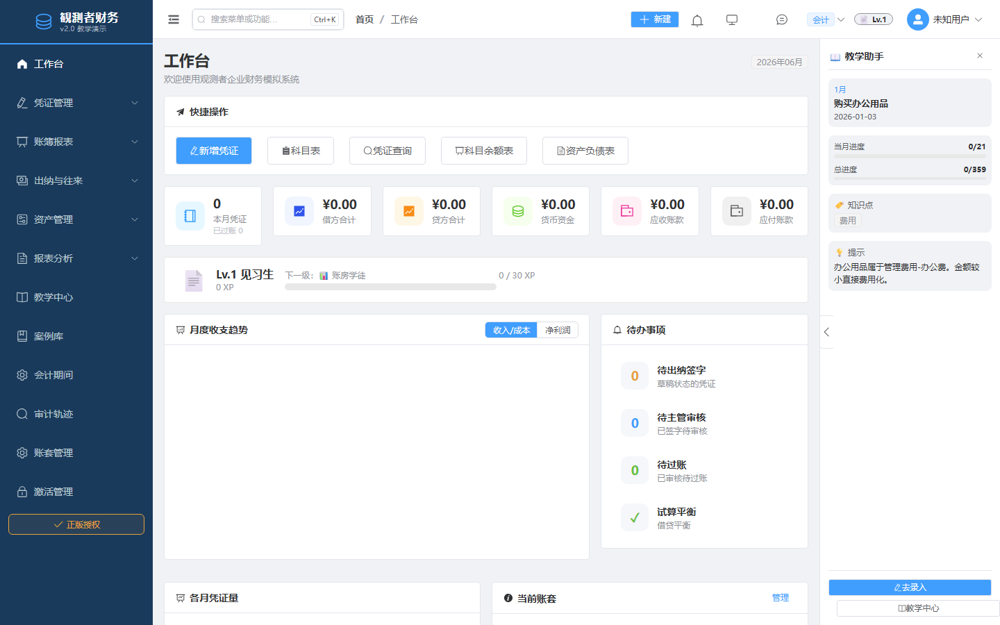
1. 第一次使用——登录和准备工作
1.1 打开系统
启动方式有两种：
| 方式 | 操作 |
|---|---|
| 一键启动 | 在项目文件夹里双击 start.bat → 等待黑窗口跑完 → 浏览器自动打开 |
| 手动启动 | 打开终端/命令提示符 → 输入 npm run dev → 浏览器访问 http://localhost:3000 |
| 关闭系统 | 双击 stop.bat 或按 Ctrl+C 关闭终端 |
1.2 登录系统
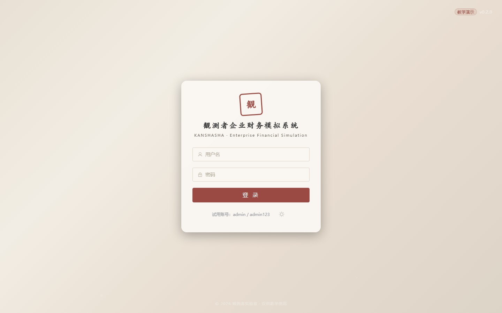
adminadmin123（密码不会明文显示，会用圆点代替）1.3 激活系统——首次使用必须做
AB12-CD34-EF56-7890- 在线激活（推荐）：系统会自动联网验证，激活码绑定你的设备
- 离线激活：如果无法联网，系统会自动使用本地验证（同一激活码绑定 1 台设备）
1.4 登录后第一件事——看看工作台
工作台上的信息告诉你：
- 快捷操作：五个大按钮——点他们可以直接跳到最常用的功能
- 本月凭证数：这个月一共做了多少张凭证
- 借方合计/贷方合计：所有金额加起来，借和贷应该相等
- 试算平衡：绿色✓表示账是平的，红色✗表示有问题
- 当前账套：你正在使用的账套信息（名称、年度、本位币等）
1.5 切换角色
这个系统有三种角色——会计、出纳、主管。不同的角色能做的事情不一样。登录后默认是"会计"。
| 角色 | 主要能做什么 |
|---|---|
| 👤 会计 | 做凭证、查账簿、出报表、管理科目、成本核算——日常做账的主力 |
| 💰 出纳 | 登记现金日记账和银行日记账、银行对账、给凭证签字——管钱的 |
| 👑 主管 | 审核凭证、管理期间、审计追踪——管人的 |
2. 科目管理——会计的"文件夹"
路径：左侧菜单栏 → 总账 → 科目表
科目是什么？ 就像电脑里的文件夹——把类似的经济业务放到一个类别里。系统已经预置了 60 多个常用科目，你也可以自己添加。
2.1 认识科目表界面
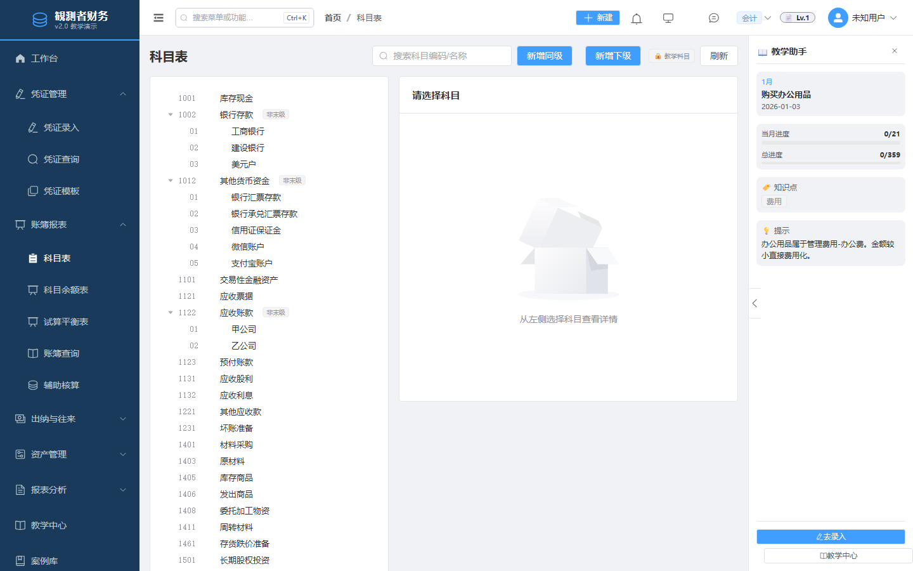
2.2 查看一个科目
2.3 新增一个科目
比如公司新开了"招商银行"账户，需要在"银行存款"下新增一个子科目：
3. 凭证管理——做账的核心工作
凭证是财务核算的基础——每一笔业务都要先做成凭证，然后数据才能流入账簿和报表。
3.1 新增一张凭证（完整步骤演示）
路径：左侧菜单 → 总账 → 凭证录入
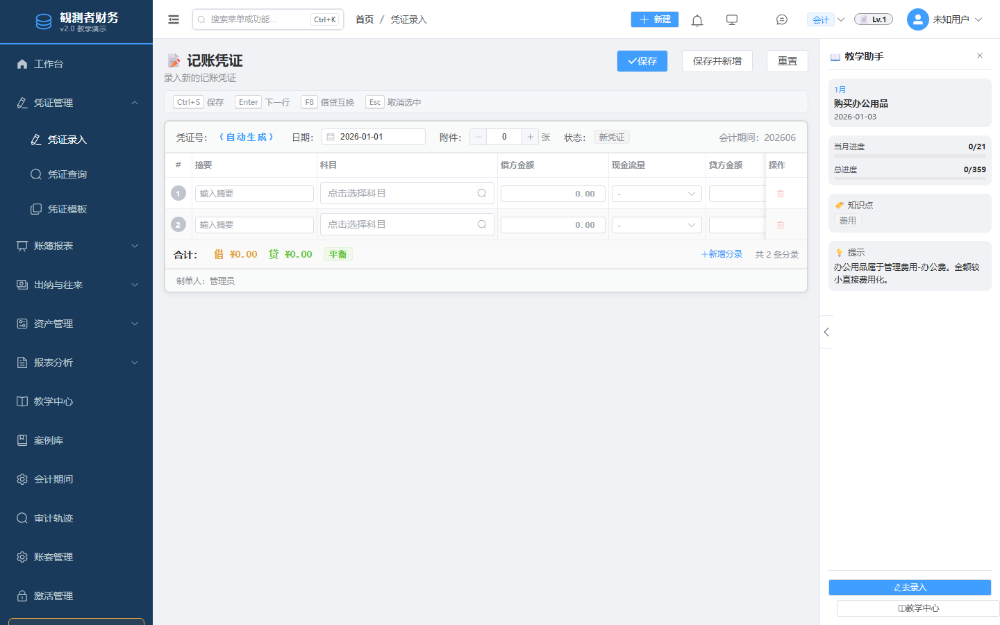
我们来演示一个实际案例：公司用工商银行账户支付办公用品费 500 元。
- 摘要：输入"购买办公用品"（描述这笔业务是什么）
- 科目：点击科目列 → 弹出一个科目选择窗口 → 在上面搜索框打"管理费用"或编码"6602" → 找到"管理费用─办公费(660201)" → 点击选中
- 借方金额：输入
500 - 贷方金额：留空（同一行不能同时填借和贷）
- 摘要：输入"购买办公用品"（同一个业务摘要可以相同）
- 科目：搜索"工商银行"或"100201" → 选中"银行存款─工商银行(100201)"
- 借方金额：留空
- 贷方金额：输入
500
如果显示✗ 不平衡，检查金额是否填对了（借方合计必须 = 贷方合计）。
3.2 如何选择会计科目（一个详细的教程）
点开"科目"列时，你会看到一个科目选择窗口，长这样：
使用技巧：可以直接输入编码快速定位——比如输入 100201 就会直接跳到"工商银行"。
3.3 凭证的四种状态——理解凭证的"生命旅程"
| 状态 | 含义 | 能做什么 |
|---|---|---|
| 📄 草稿 (DRAFT) | 刚创建，还没人检查过 | 可修改、可删除。出纳可以签字，主管可以审核 |
| ✍️ 已签字 (SIGNED) | 出纳确认了（涉及现金/银行的凭证） | 主管可以审核。出纳可以取消签字 |
| ✅ 已审核 (APPROVED) | 主管复核通过了 | 可以过账。主管可以取消审核 |
| 📊 已过账 (POSTED) | 数据已进入账簿和报表 | 不可修改。可以先反过账，再修改 |
3.4 签字、审核、过账操作
路径：左侧菜单 → 总账 → 凭证查询
操作一：查询凭证
- 期间：输入 YYYYMM 格式，比如 202606（表示 2026 年 6 月）
- 日期范围：可以选开始和结束日期
- 状态：选"草稿""已审核"或空（全部）
- 关键词：输入摘要里的文字或科目名称
操作二：出纳签字
适用场景：凭证里有"库存现金"或"银行存款"科目时
操作三：主管审核
操作四：过账
3.5 凭证查询——筛选与批量操作
凭证查询页不仅能筛选查看凭证，还支持批量签字/审核/过账：
3.6 凭证模板——快速录入常用业务
路径：总账 → 凭证模板
对于每月都会发生的固定业务（如计提折旧、结转工资），可以使用凭证模板——一次设置，每月调用。
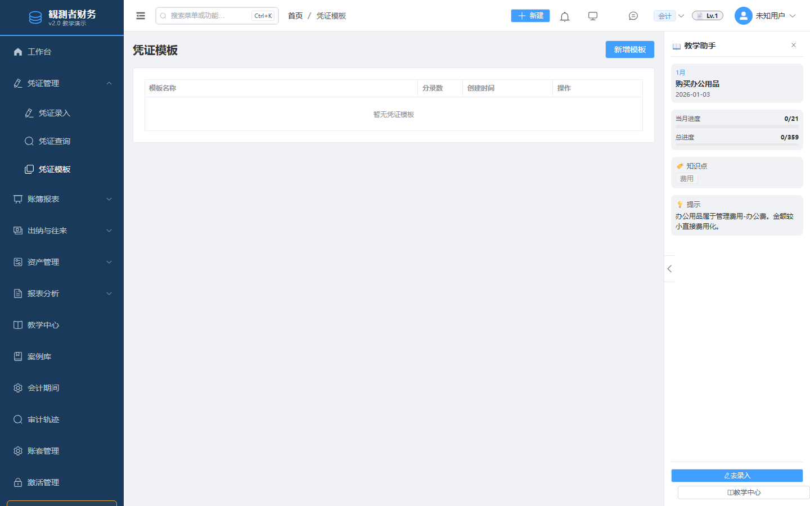
3.7 查看附件与凭证详情
在凭证查询列表中，点击某张凭证的"附件"图标或双击凭证行，可以查看该凭证的完整信息，包括原始单据影像：
教学模式下，每道题都配有对应的原始凭证（发票、回单、收据、支票等），点击浮动窗的"附件"按钮即可查看——和真实单据一模一样，帮助你建立"凭证←→原始单据"的对应关系。
4. 期末处理——月底结账
4.1 期末结转（把费用和收入转到"本年利润"）
路径：左侧菜单 → 报表 → 期末结转
为什么要做这一步？ 每个月月底，要把这个月的收入和费用汇总，算出来这个月赚了还是亏了。这个"汇总"的过程就叫"结转"。
4.2 结账/反结账
路径：左侧菜单 → 系统管理 → 会计期间
什么是结账？ 确认这个月的账已经做完、不再修改了→"关闭"这个月。关闭后这个月的凭证不能再改。
什么是结账？ 确认这个月的账已经做完、不再修改了→"关闭"这个月。关闭后这个月的凭证不能再改。
- 如果状态是"开启" → 点"结账" → 确认 → 该月关闭
- 如果状态是"已结账" → 点"反结账" → 确认 → 重新打开
5. 查看报表
三种报表都在：左侧菜单 → 报表 → 选你要看的表
| 报表 | 看什么的 |
|---|---|
| 资产负债表 | 公司到这一天为止有多少家底（资产多少、欠债多少、股东权益多少） |
| 利润表 | 公司这段时间赚了多少、花了多少、净赚多少 |
| 现金流量表 | 公司这段时间钱从哪来、到哪去了（经营/投资/筹资） |
5.1 查看资产负债表
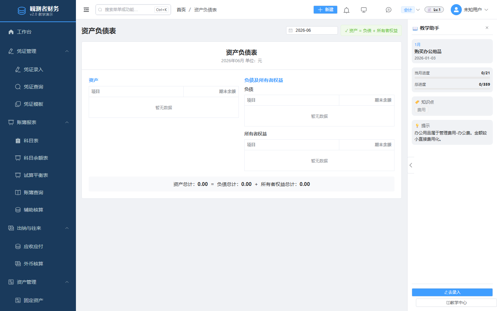
5.2 查看利润表
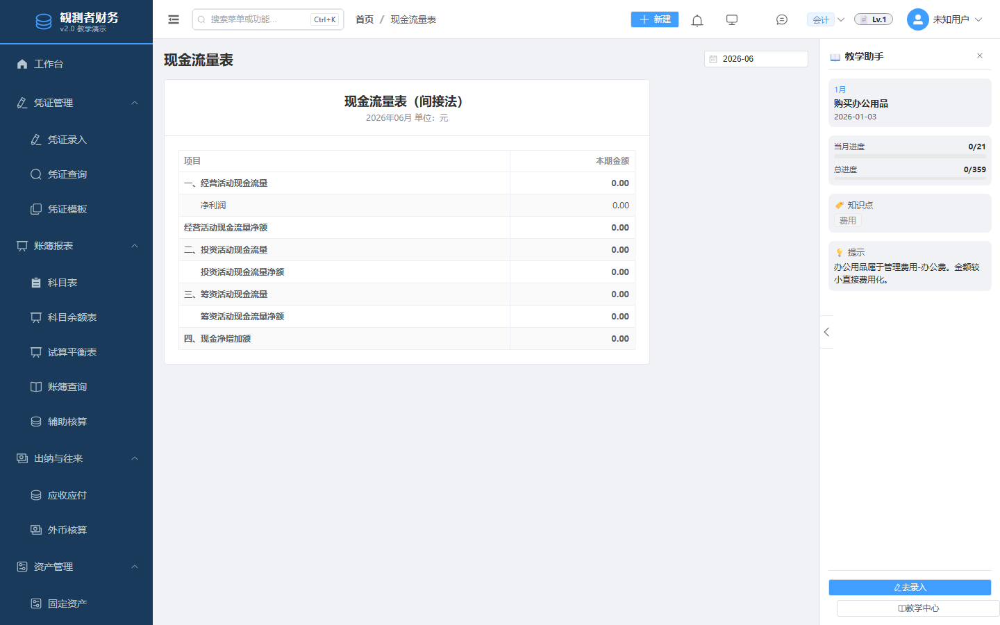
5.3 试算平衡表——检查账是否做平
路径：总账 → 试算平衡
试算平衡表列出所有科目截至当前期间的借方发生额、贷方发生额和余额。如果 借方合计 = 贷方合计，说明账是平的。
5.4 科目余额表——查看各科目余额
路径：总账 → 科目余额
科目余额表显示每个科目的期初余额、本期发生额和期末余额。可以按月份筛选，也可以展开查看明细科目的余额。
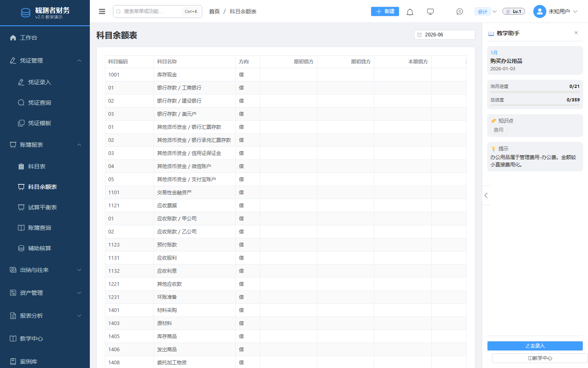
5.5 自定义报表——按需定制
路径：报表 → 自定义报表
除了三张标准报表外，系统还支持自定义报表——你可以选择科目范围、期间、列字段，生成自己需要的报表格式。
5.6 报税管理——生成税务申报表
路径：报表 → 报税管理
系统根据科目余额自动计算增值税、企业所得税等税种的申报数据，生成申报表供你核对。
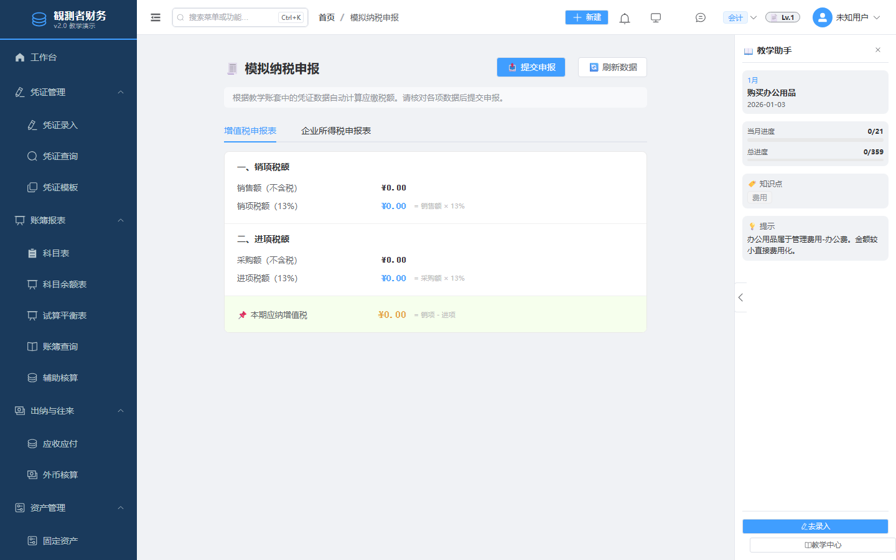
6. 教学系统——跟着学做账
如果你是会计新手，强烈建议使用教学系统——它有 2,122 个任务，覆盖 4 大行业，每个行业全年 12 个月的企业真实业务。
6.1 选择行业——从哪个行业开始学
| 行业 | 任务数 | 特色 |
|---|---|---|
| 🏭 制造业 | 586 个 | 采购→生产→销售→成本核算，覆盖完整工业链条 |
| 🏬 商业企业 | 531 个 | 商品流通（采购→仓储→销售），无生产成本 |
| 💼 服务业 | 504 个 | 管理咨询/软件开发，项目制核算 |
| 🏗️ 建筑业 | 501 个 | 建筑工程，按进度确认收入 |
6.2 进入教学中心
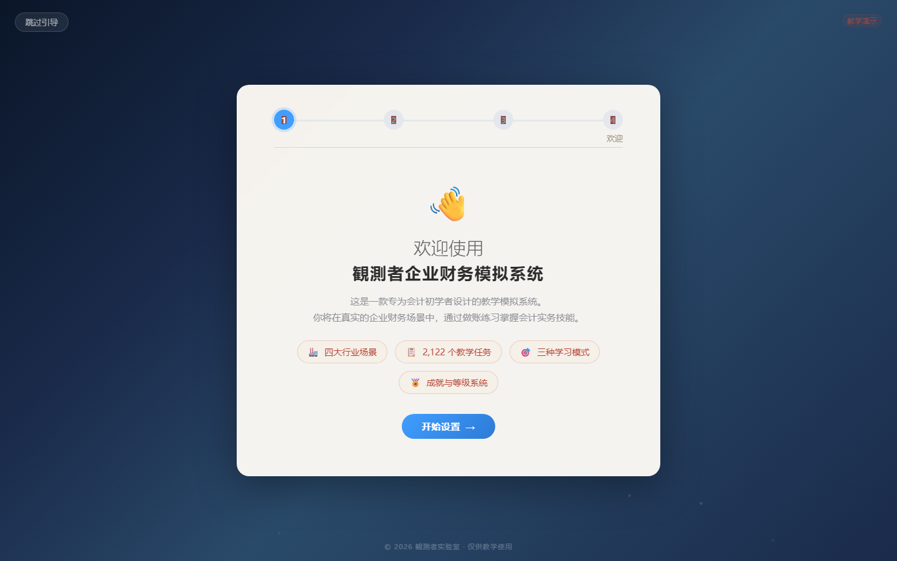
- 想学完整的企业财务 → 选"全部"
- 只想学做账（凭证、报表）→ 选"会计路线"
- 只想学管钱（日记账、对账）→ 选"出纳路线"
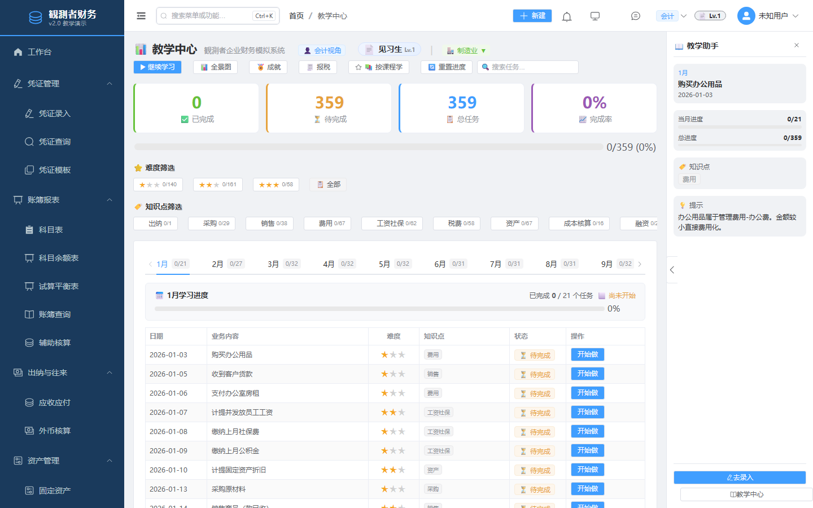
6.3 认识教学浮动窗
浮动窗各区域说明：
| 区域 | 用途 |
|---|---|
| 标题栏 | 显示"第 X/Y 个任务"和任务名称。右边[−]是最小化，[×]是关闭 |
| 任务描述 | 业务场景说明——告诉你这家公司发生了什么 |
| 模式切换 | 引导/练习/考试/自由练习四种模式（见下节） |
| 附件区 | 点击可以查看原始凭证（发票/回单/收据）——和真实的一模一样 |
| 进度条 | 该月的完成进度 + 全部任务的完成进度 |
| 底部按钮 | "◀ 上一个"退回，"🧾 去录入"跳转到凭证录入页答题，"下一个 ▶"跳到下一题 |
6.4 三种学习模式怎么选
| 模式 | 适合谁 | 怎么学 |
|---|---|---|
| 🟢 引导模式 | 完全零基础（推荐） |
系统分三步教你： ① 理解业务 → 阅读描述和凭证 ② 逐笔分析 → 系统给提示，你看答案和讲解 ③ 检查确认 → 确认后自动填入正确分录 你只需看→理解→确认。最适合第一次接触。 |
| 🟡 练习模式 | 有点基础了 |
空白凭证你来自行填写 → 卡住了点"💡 我要提示"→ 提示会从"方向→科目→金额"逐级给出 填好后点"检查答案"→ 系统自动评对错 |
| 🔴 考试模式 | 想检验自己 |
完全独立完成，没有任何提示 → 提交后系统判分。 适合做完一轮复习时使用。 |
| 🟣 自由练习 | 只想随意操作 |
所有教学任务全部开放，可以自由翻看每一道题的答案。 不过账、不给经验值，纯粹浏览和尝试。 适合先预览再正式学习。 |
6.5 如何答题（以引导模式为例）
- 先读场景描述和原始凭证
- 系统提问"这笔业务会涉及哪些科目？"——你想一想后点"查看答案"
- 系统揭示答案+会计讲解——你理解了再点"下一步"
❌ 答错了：系统会显示正确答案，并给出每笔分录的会计逻辑讲解。该任务自动记入"错题本"。
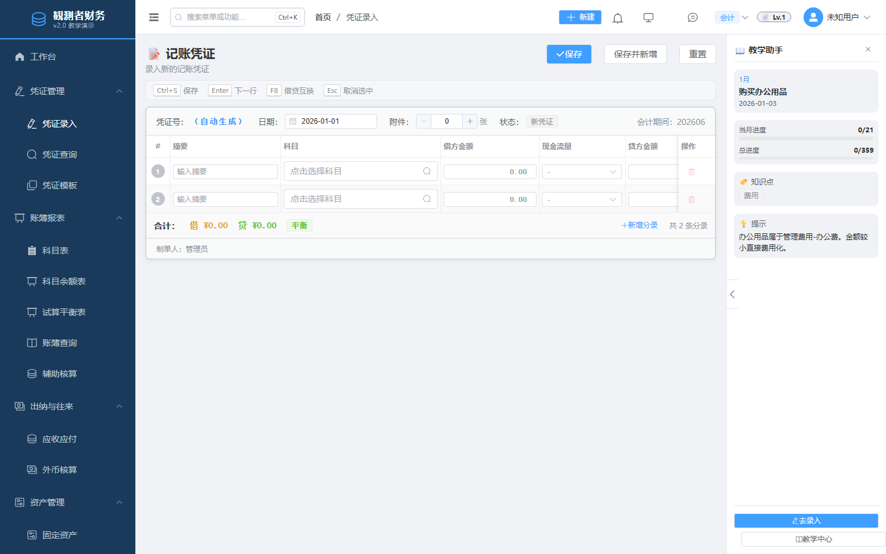
另外，在"教学中心"里还有 业务流程图 功能（点击"📊 流程图"按钮），直观展示企业财务全流程：
6.6 查看错题本
6.7 查看成就
路径：教学中心 → 点击"🏅 成就"按钮
完成特定条件可以解锁 16 项成就：
| 类别 | 徽章 | 解锁条件 |
|---|---|---|
| 📈 进度 | 初试啼声、小试牛刀、百战能手、千锤百炼 | 完成第1/10/100/500个任务 |
| ⭐ 品质 | 五连击、十连冠、考场霸主、永不放弃 | 连续5题/10题全对、考试满分、错三遍后答对 |
| 🗺️ 探索 | 工业巨匠、商界精英、服务专家、筑梦师 | 完成制造业/商业/服务业/建筑业全部任务 |
| 🏛️ 里程碑 | 月度全勤、季度达人、双面能手、徽章收藏家 | 完成整月/整季度、双角色各30题、获得5枚徽章 |
全部 16 项成就解锁后获得「圆满收官」终极成就 👑。
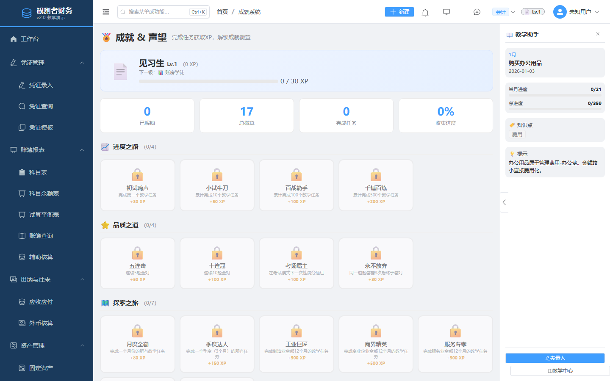
6.8 经验值与等级——完成任务升级
每完成一个教学任务都会获得经验值（XP），累计经验值可以提升等级称号：
| 获取方式 | XP | 说明 |
|---|---|---|
| 引导模式答对 | +10 | 跟随引导完成，系统自动填入 |
| 练习模式答对 | +15 | 自己填写并答对 |
| 考试模式答对 | +20 | 独立完成且正确 |
| 首次完成 | 额外+5 | 每个任务第一次答对时额外奖励 |
| 解锁成就 | +30~500 | 每项成就附送经验值 |
系统共设 13 级声望称号：见习生 → 账房学徒 → 核算助手 → 初级会计 → 中级会计 → 高级会计 → 财务主管 → 财务分析师 → 财务经理 → 财务总监 → 首席财务官 → 财务宗师 → 🏆 财务传说。
你的等级和经验值可以在"教学中心"左上角查看。等级越高，说明对财务软件的掌握越熟练。
7. 案例库——真实企业案例实战
除了按月份循序渐进的行业教学外，系统还提供了 9 个企业案例，覆盖不同规模和业态的完整业务场景。案例与教学任务完全独立，适合学习完基础后挑战真实情景。
7.1 进入案例库
路径：左侧菜单 → 案例库
🏪 阳光便利店、时尚买手店 … 🏭 创新科技公司、天工机械 … 🏢 大型集团
7.2 案例模式的特点
| 特点 | 说明 |
|---|---|
| 数据独立 | 案例数据与教学数据完全分开，互不影响 |
| 真实场景 | 每个案例模拟一家真实公司的完整账套（科目、期初余额、业务流） |
| 难度分级 | 从个体户→小企业→中型企业→大型集团，难度递增 |
| 完成报告 | 每个案例完成后可以查看财务报表，与教学数据对比学习 |
7.3 退出案例
8. 数据安全与完整性保护
财务数据是公司最重要的资产之一。本系统在安全方面做了多重保护，确保你的数据安全可靠。
8.1 数据存储在哪里
- ✅ 你的财务数据始终在你自己的电脑上
- ✅ 不需要联网也能使用（首次激活除外）
- ⚠️ 如果清除浏览器缓存，数据会丢失——建议定期备份
8.2 数据加密保护
系统对敏感数据进行了双轨加密保护：
- 明文同步写入：确保读取速度最快
- AES-GCM 异步加密：同时保存一份加密版本（2 秒防抖），防止数据被篡改
- 加密范围包括：激活码、设备指纹、场景数据、XP 数据等所有敏感信息
8.3 激活码安全机制
- 激活码为 16 位大写 hex 格式（例如
AB12-CD34-EF56-7890） - 同一激活码绑定 1 台设备（设备指纹固定，更换电脑需重新激活）
- 激活验证首选在线验证，Worker 不可达时自动回退到本地校验
- 连续 20 次激活失败会临时封禁 1 小时（防暴力破解）
8.4 数据完整性自检
系统启动时会自动检查 7 大核心数据模块的完整性：
- 制造业教学数据（入门+2~12月）
- 商业企业教学数据（12个月）
- 服务业教学数据（12个月）
- 建筑业教学数据（12个月）
- 案例库数据（9个案例）
如果检测到数据被篡改或损坏，弹窗提醒你重新安装。这个检查完全静默运行，不影响正常使用。
9. 其他常用功能简介
9.1 出纳管理
路径：总账 → 出纳管理 | 需要角色：出纳
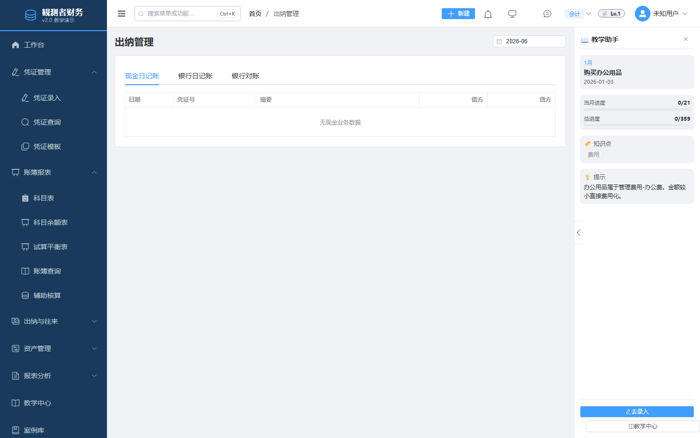
- 现金日记账：查看库存现金的日常收支流水（自动从凭证取数，不用手动登记）
- 银行日记账：查看银行存款的流水
- 银行对账：把公司记的银行账和银行发来的对账单进行核对 → 点"新增对账单"录入银行数据 → 点"自动勾对"让系统匹配
9.2 固定资产
路径：总账 → 固定资产
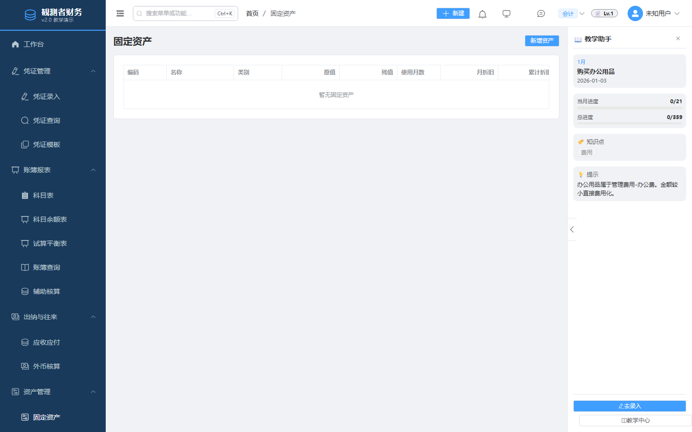
- 管理公司的大件资产（设备、房屋、车辆等）
- 新增资产时需要填写：名称、类别、原值、残值、使用年限、折旧方法（推荐用"直线法"——最简单）
- 系统会自动计算每月折旧额
9.3 辅助核算
路径：总账 → 辅助核算
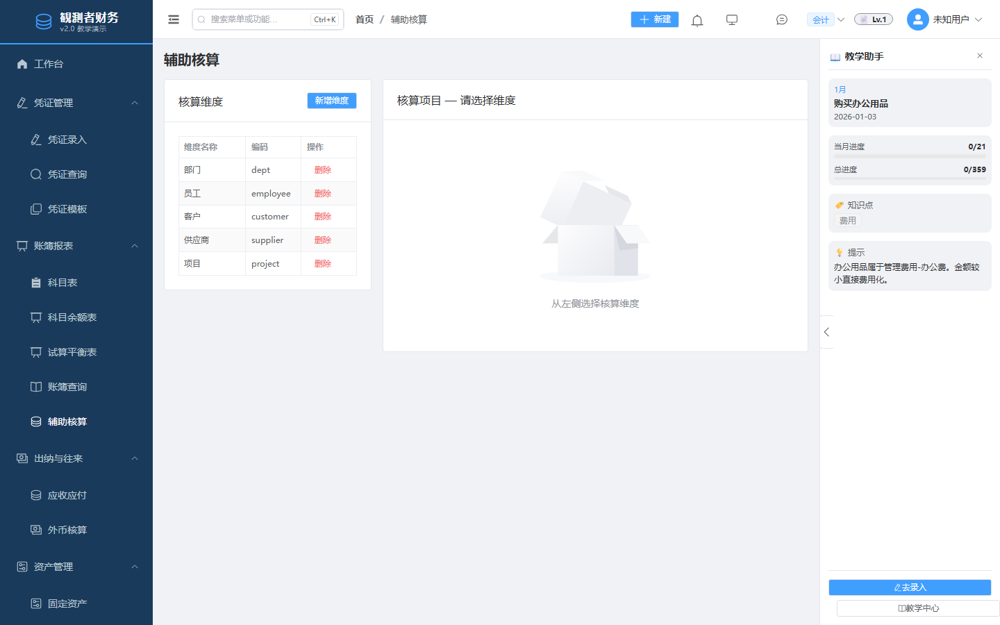
当你需要按"部门"来统计费用时：比如想知道"销售部这个月花了多少办公费"，就可以用辅助核算。
- 系统预置了 5 个维度：部门、员工、客户、供应商、项目
- 先在"辅助核算"里添加部门 → 然后在科目管理中给"管理费用"关联"部门"维度 → 做凭证时选择对应的部门
9.4 审计轨迹
路径：系统管理 → 审计轨迹
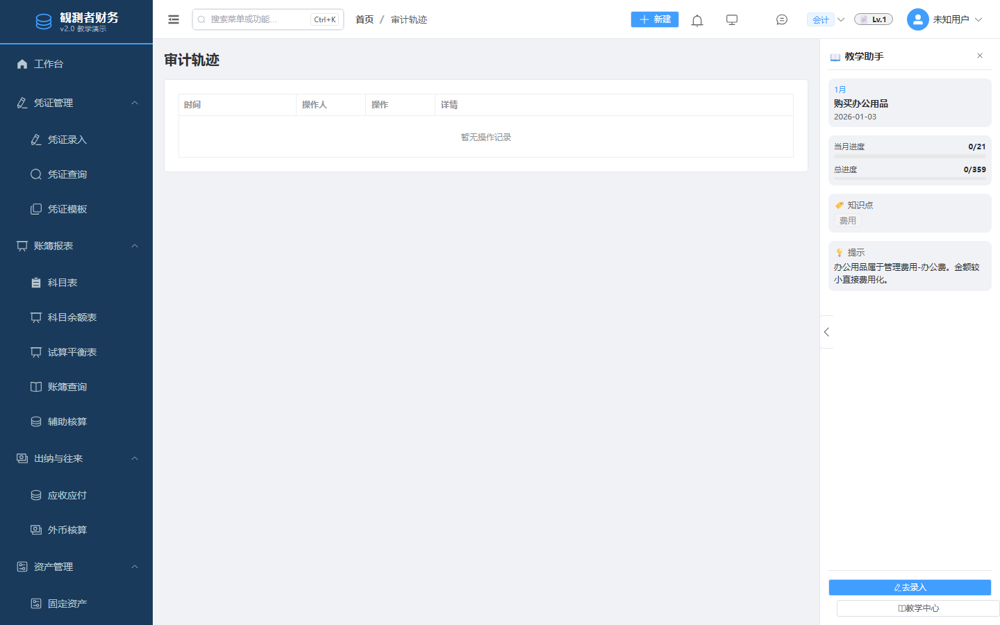
这里记录了谁在什么时间做了什么操作——比如"张三 2026-06-15 10:30 审核了凭证 记-202606-001"。
不可删除，不可修改——这是为了保证财务数据的可追溯性。
9.5 应收应付管理
路径：总账 → 应收应付
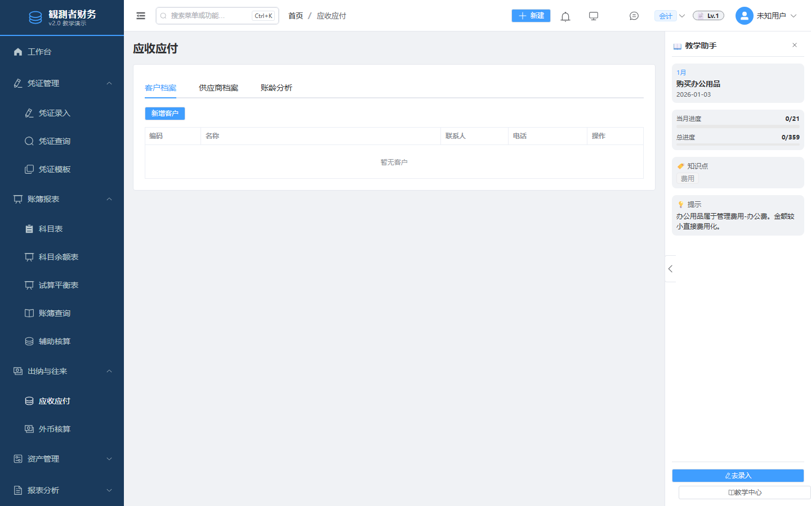
- 应收：管理客户的欠款——查看应收余额、账龄分析、收款核销
- 应付：管理供应商的应付款——查看应付余额、付款计划
- 应收应付数据自动从凭证取数，无需手动登记
9.6 工资核算
路径：总账 → 工资核算
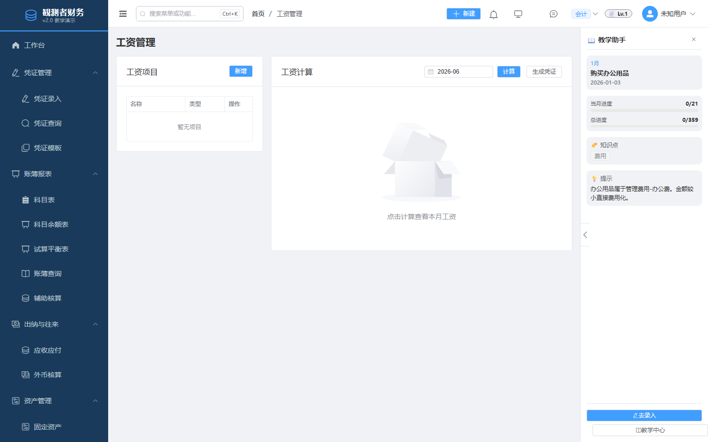
- 录入员工工资数据（基本工资、社保、个税等）
- 系统自动计算应发、实发金额
- 一键生成工资计提和发放凭证
9.7 外币核算
路径：总账 → 外币核算
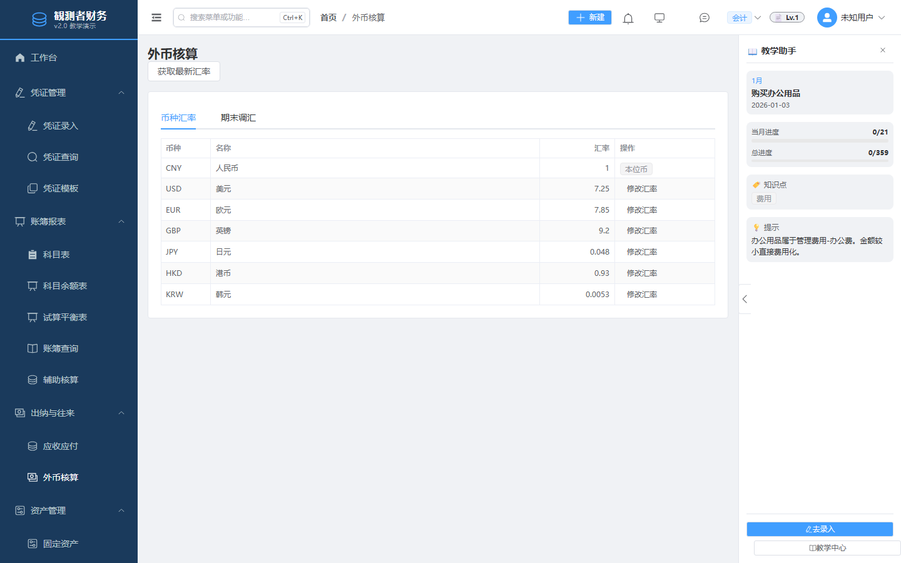
- 管理外币账户和汇率
- 期末自动计算汇兑损益
- 适用于有进出口业务的企业
9.8 总账查询——按科目查看流水
路径：总账 → 总账查询
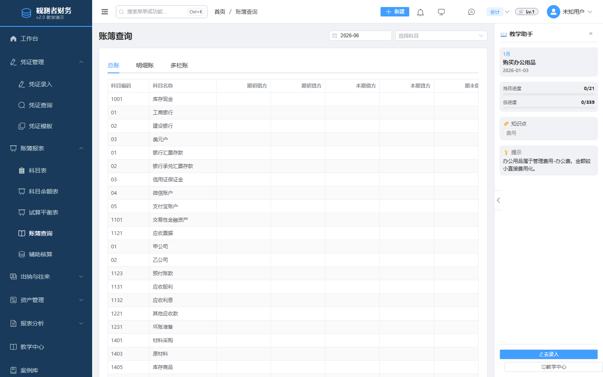
总账查询可以按科目查看其下所有分录的逐笔流水，支持按月份、按金额范围筛选，是查账的重要工具。
9.9 账户管理
路径：系统管理 → 账户管理
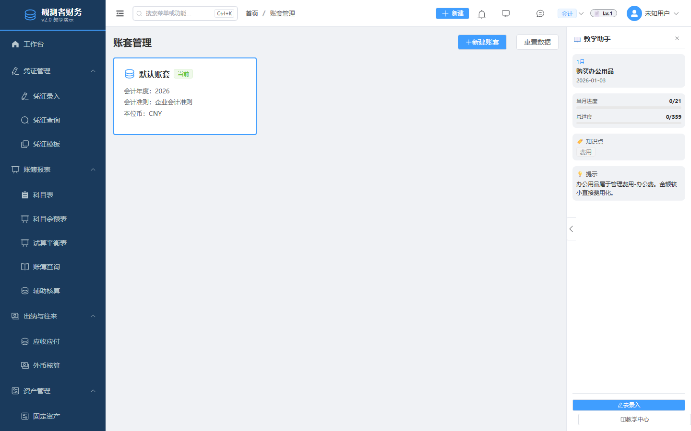
- 查看和修改企业基本信息（名称、税号、地址等）
- 配置系统参数（小数位数、启用辅助核算等）
- 修改登录密码
10. 常见问题
❓ 保存凭证时提示"借贷不平衡"怎么办？
✅ 检查一下借方金额合计和贷方金额合计是否相等。常见错误：同一行里既填了借方又填了贷方，应该只填一方。
❓ 点了"保存"没有反应？
✅ 检查是否必填项没填（日期、摘要、科目都是必填的）。另外分录至少要有两行（一借一贷）。
❓ 修改不了已过账的凭证？
✅ 需要先"反过账"（在凭证查询中找到该凭证 → 点"反过账"）→ 然后就可以修改了 → 改完重新过账。
❓ 为什么看不到"出纳管理"这个菜单？
✅ 因为当前角色不是出纳。看页面右上角→点角色标签→切换到"出纳"即可。
❓ 资产负债表不平衡怎么办？
✅ 常见原因：① 损益类科目没有结转 ② 还有凭证是草稿状态没有过账 ③ 做凭证时借贷方向搞反了。先去检查这三个方面。
❓ 教学中想切换模式但不知道怎么操作？
✅ 打开浮动窗 → 顶部有"引导模式""练习模式""考试模式""自由练习"四个按钮 → 点击切换。切换后重新进入任务会按新模式处理。
❓ 怎么切换行业（制造业/商业/服务业/建筑业）？
✅ 在页面右上角找到行业名称标签（默认显示"制造业"）→ 点击 → 弹出行业列表 → 选择你想学的行业 → 系统自动加载该行业的教学数据。
❓ 之前做过的一些任务，数据还在吗？
✅ 数据保存在你浏览器的 localStorage 里（不会上传到任何服务器）。如果清除了浏览器缓存或开启了无痕模式，数据就没了。
❓ 想重新学一遍，怎么重置？
✅ 在教学中心页面 → 右上角找到"🔄 重置进度"按钮 → 点击确认 → 所有完成记录清空，账套也会重置到初始状态。
❓ 激活码丢了/激活失败怎么办？
✅ 如果激活码丢失，请联系管理员查询。激活失败时：① 检查网络是否通畅 ② 确认激活码格式正确（16位大写hex）③ 如果提示"设备已绑定"，说明该激活码已在一台设备上激活，更换电脑需要联系管理员重置。
❓ 案例库和教学任务有什么区别？
✅ 教学任务是按月份循序渐进的引导式学习；案例库是独立的真实企业账套，需要你独立完成从凭证到报表的全流程。建议先学完至少一个月教学，再挑战案例。
❓ 有没有系统的会计知识点教材？
✅ 有！系统赠送了完整的教学知识点文档（docs/教学知识点介绍.html），包含会计 12 章 + 出纳 8 章，共 65 节内容。支持搜索、书签、暗色模式，在软件目录的 docs/ 文件夹里可以打开。
❓ 报错信息看不懂怎么办？
✅ 可以截图发给我（Claude）看。常见的错误大多是因为科目没选对、金额填反了、或者借贷不平衡。
文档版本 v2.2 · 2026 年 6 月 · 観測者企业财务模拟系统
喵~